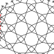
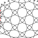

GroundForge
A toolbox to design bobbin lace grounds or braids with matching diagrams.
The user guide provides more details and hints for the following steps.
- Select a thumbnail, or try the advanced options to invent your own patterns.
- Choose stitches, those with an odd number of crossings cause threads to follow other paths than pairs.
- Decide where to apply a contrasting thread: select the square start of a thread to paint it and see its path.
- Nudging pins to slightly different positions can have a significant effect on the shapes in the pair diagram. The pattern sheet contains reshaped variants of the slightly irregular pair diagram, customize a patch to your own taste and needs with an SVG editor.
We'd love to see your creations.
Thumbnails:")
") 



 more...
more...